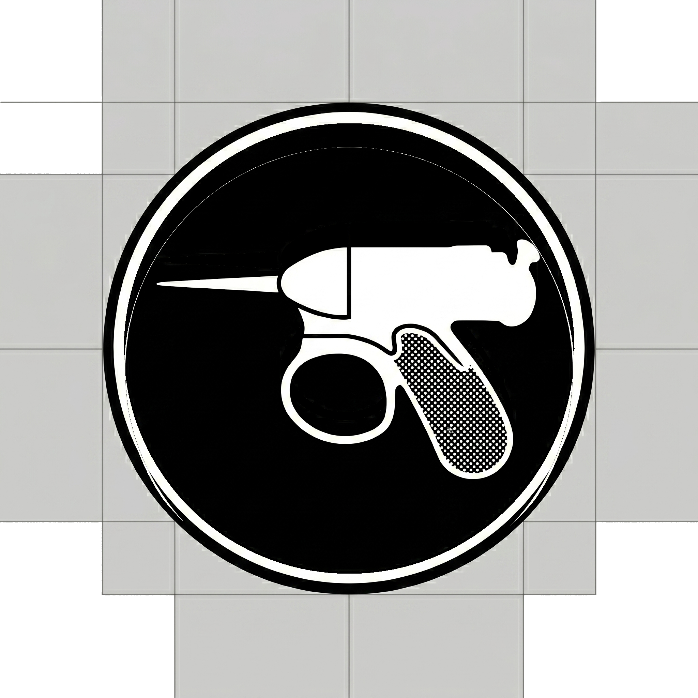

Crickets — Asset Set
Agentic toolkit · Men in Black ref · final assets
The mark. Noisy-cricket-style sidearm inside a white-ringed black disc. Gun shifted 70px down from the original generation so the barrel reads as optically centered in the disc.
Generated four variants per size: crickets-* (original gray bg), crickets-transparent-* (gray wiped to alpha), crickets-disc-* (recommended — disc only on transparent), and crickets-on-black-* (disc on a solid black square for OG cards / dark plates).
README banner
assets/crickets/banner-1600.png · 1600×640 (2.5:1 GitHub README ratio)
Files: banner-1600.png (1600×640, 1x) and banner-3200.png (3200×1280, 2x retina). Both pre-rendered, ready to drop into a README.
Live source: banner.html — open this if you want to tweak copy, colors, or status badges and re-export.
README snippet:
<p align="center">
<img src="assets/crickets/banner-1600.png" alt="Crickets" width="100%">
</p>
Recommended · disc on transparent
assets/crickets/crickets-disc-*.png · use for avatars / favicons / repo icon
Context previews
crickets · agentic toolkit
alexherrero/crickets
Crickets — agentic toolkit
Disc on solid black
assets/crickets/crickets-on-black-*.png · for OG cards / dark plates
Original (gray bg preserved) · transparent

transparent-2048
Favicon snippet
<link rel="icon" type="image/png" sizes="32x32" href="/assets/crickets/crickets-disc-32.png">
<link rel="icon" type="image/png" sizes="16x16" href="/assets/crickets/crickets-disc-16.png">
<link rel="apple-touch-icon" sizes="256x256" href="/assets/crickets/crickets-disc-256.png">
File index
assets/crickets/ — recommended (disc only)
SVGcrickets.svg
2048crickets-disc-2048.png
1024crickets-disc-1024.png
512crickets-disc-512.png
256crickets-disc-256.png
128crickets-disc-128.png
64crickets-disc-64.png
48crickets-disc-48.png
32crickets-disc-32.png
16crickets-disc-16.png
assets/crickets/ — on solid black
2048crickets-on-black-2048.png
1024crickets-on-black-1024.png
512crickets-on-black-512.png
256crickets-on-black-256.png
128crickets-on-black-128.png
64crickets-on-black-64.png
48crickets-on-black-48.png
32crickets-on-black-32.png
16crickets-on-black-16.png
assets/crickets/ — original gray bg + transparent
2048crickets-2048.png
1024crickets-1024.png
512crickets-512.png
256crickets-256.png
128crickets-128.png
64crickets-64.png
48crickets-48.png
32crickets-32.png
16crickets-16.png
2048 tpcrickets-transparent-2048.png
1024 tpcrickets-transparent-1024.png
512 tpcrickets-transparent-512.png
256 tpcrickets-transparent-256.png
128 tpcrickets-transparent-128.png
64 tpcrickets-transparent-64.png